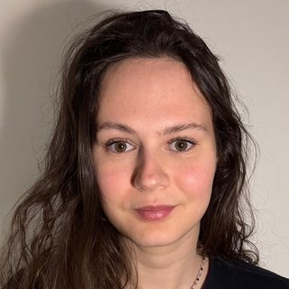

La Fondazione Don Carlo Gnocchi es una fundación italiana sin ánimo de lucro que, desde hace más de 70 años, atiende a personas con discapacidad, personas mayores y pacientes que necesitan rehabilitación a través de una red de centros en nueve regiones italianas. Su centro de Florencia está reconocido por el Ministerio de Salud de Italia como Instituto Científico de Investigación, Hospitalización y Asistencia Sanitaria (IRCCS) en el ámbito de la rehabilitación, y alberga laboratorios de investigación como PROMISE@LAB y la Unidad de Rehabilitación Neuromotora Compleja, en colaboración con la Universidad de Florencia.
Papel en INTEGRA
La FDG coordina el proyecto y lidera su gestión (WP1). Ha desarrollado y certificado la plataforma de telerrehabilitación MAIA, que se utiliza en los estudios piloto de Italia, España y Rumanía. Lidera la definición de los requisitos del sistema, el protocolo del estudio piloto y su aprobación ética, así como el marco de evaluación del impacto, y gestiona el centro piloto urbano de Italia.
Equipo
 Francesca Cecchi Investigadora principal y coordinadora del proyecto
Francesca Cecchi Investigadora principal y coordinadora del proyecto Michele Piazzini Gestor del proyecto
Michele Piazzini Gestor del proyecto
Maria Luigia del Vicario Giulio Cherubini
Giulio Cherubini Virginia Ambrogi
Virginia Ambrogi Marco Baccini
Marco Baccini